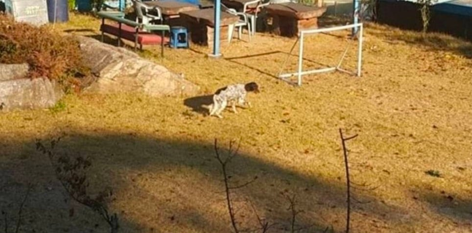
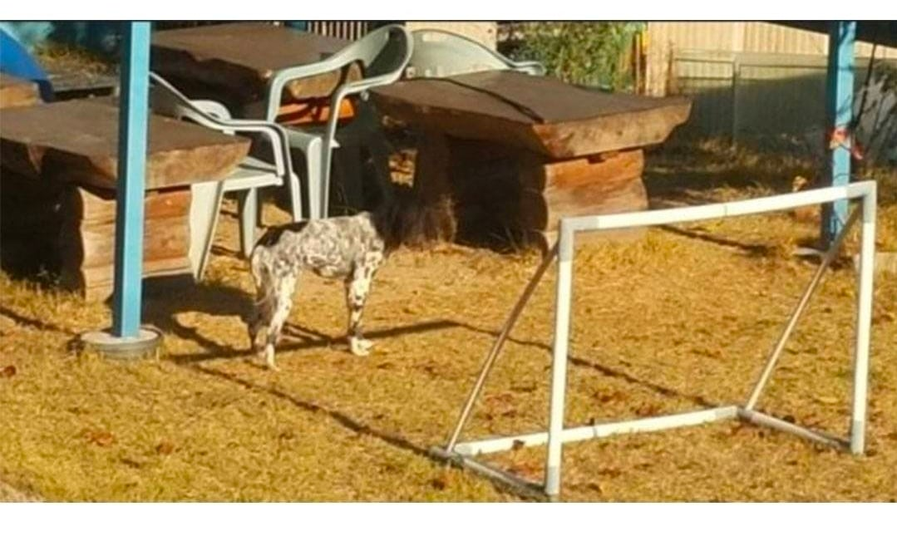
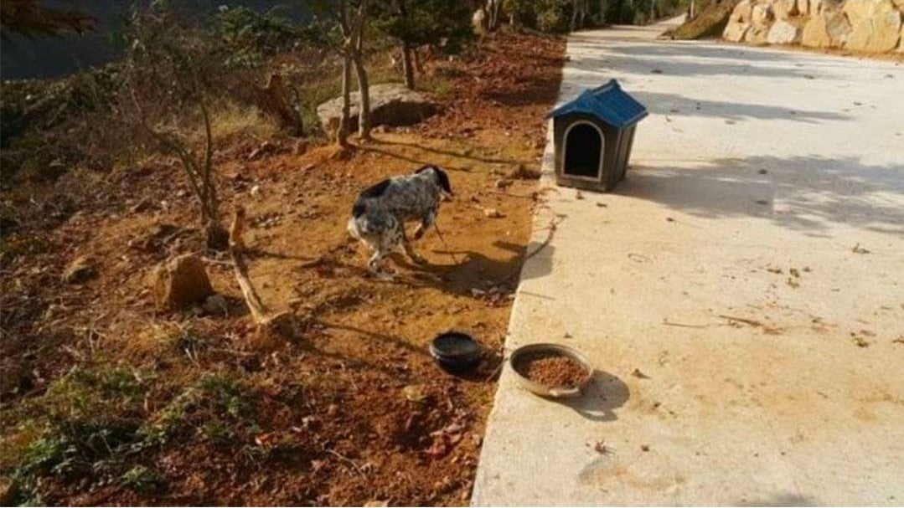
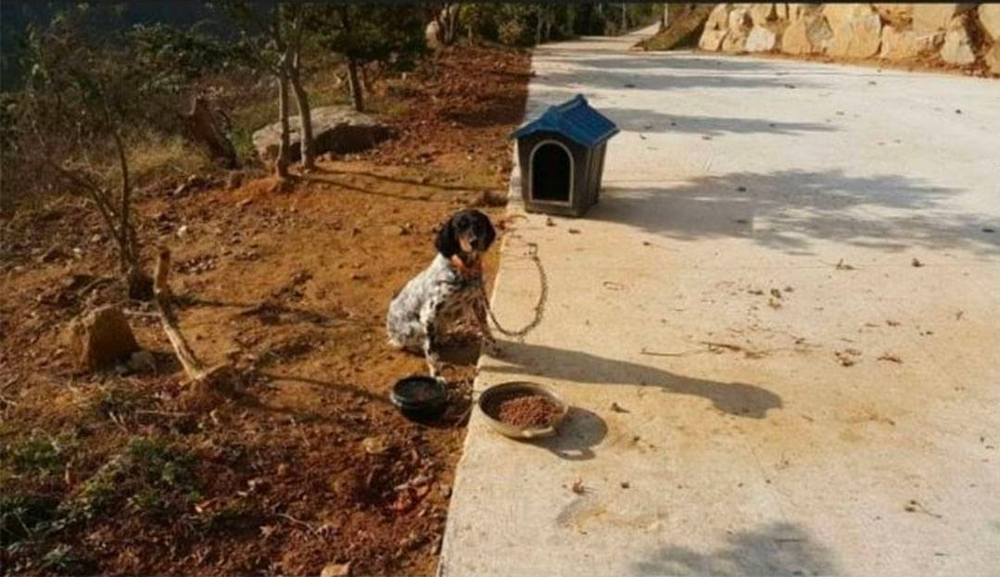
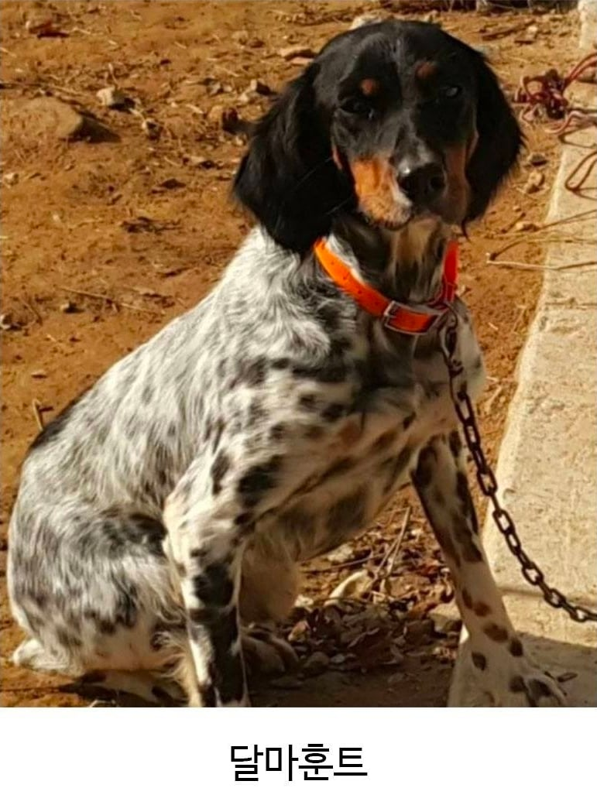

??? : 만약 얼굴이 닥스훈트고 몸이 달마시안이면......
??? : 오우 조셉 쉣 또냐고...
??? : 수컷은 닥스훈트일까 달마시안일까?
작은개가 큰개종자를 임신하면 새끼가 너무 커서 죽을가능성이 높으니 반대일 가능성이 크겠지
달마시안 종자 새끼가 그렇게커?
포인터류 견종 아닌가??
머리만 바꾼줄 ㄷ
세터인데
잘라 붙였냐?
"에드...워드... 오빠...."
너.. 봤구나
달마야 놀자
닥스시안
어두울때 보면 목없는 개인줄ㄷㄱ
옆비싼 허리가운
리버스 오카피
세터임
포인터 견종과 섞인거 같음. 그 개는 머리부분과 몸 부분이 따로 분리된 모습이 전형적인 특징인데 저 개가 딱 포인터 견종의 특징을 지니고 있어. 머리 아래쪽 털 모양새랑 점박이 무늬도 포인터의 특징임. 저먼 숏헤어드 포인터가 유독 몸과 머리가 분리된 모습이고 달마시안이랑 관련은 없어보임
(대충 노르웨이어로 뭔가 외침)
그건개야!
달마시안 닥스훈트는 사이즈차이가 너무 심한데 ㅋㅋ
짤라 붙였냐?
일..단...놀..자...
어.... 저게.. 음... 음????